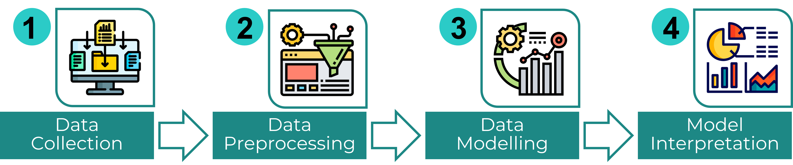

METHODS
General Flow
The project involved data collection, data preprocessing, data modelling, and model interpretation.

Data collection and data preprocessing are as described in the Data section.
Data Modelling
The preprocessed data was modelled using segmented linear regression with Fisher z-transformation (α=0.05). Regression lines were fitted for before and during the campaign period (campaign period started in February, 2022). Then, the slopes of the regression lines were compared by calculating the Fisher z value. Fisher z transforms the distribution of the correlation coefficient into a normal distribution (Glen, n.d.).
Change-point detection was also conducted using the Pelt algorithm. The Pelt algorithm scans each data point sequentially, then for each data point, decides whether to keep it as a change-point based on the calculated cost of adding it as a change-point. The goal is to minimize the total cost (Truong, Oudre, & Vayatis, 2020). This project used the ruptures library implementation (ENS Paris-Saclay, 2020), tweaking the following parameters:
- model: Cost function used. “rbf”, “l1”, and “l2” were explored.
- jump: Only data point indices that are multiples of jump are scanned as candidate change-points. jump=1 to 5 were explored.
- pen: Penalty value. Higher pen leads to fewer change-points. The range of pen explored depended on the values for model and jump.
Model Interpretation
After data modelling, the significance of the found change-point dates was examined, comparing the dates with events and developments during the time period.
References
ENS Paris-Saclay. (2020). Exact segmentation: Pelt. http://dev.ipol.im/~truong/ruptures-docs/build/html/detection/pelt.html
Glen, S. (n.d.). Fisher z-transformation. https://www.statisticshowto.com/fisher-z/
Truong, C., Oudre, L., & Vayatis, N. (2020). Selective review of offline change point detection methods. http://www.laurentoudre.fr/publis/TOG-SP-19.pdf
End of Page